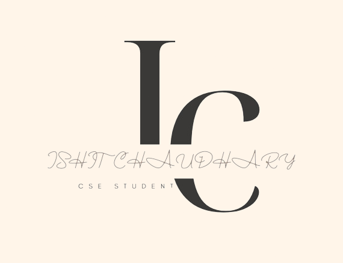
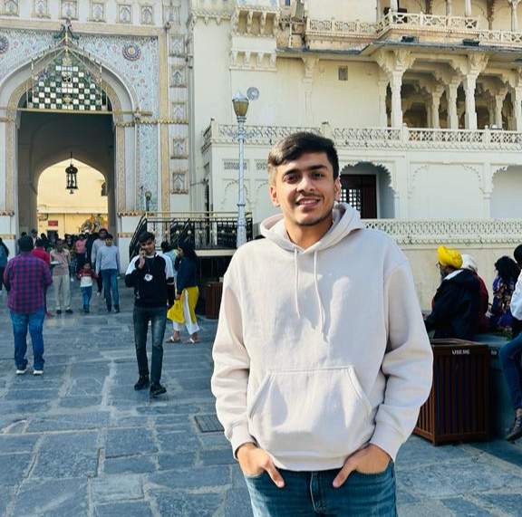

About Me
Ishit is a dedicated student currently pursuing a Bachelor's in Technology (B.Tech) in Computer Science and Engineering (CSE) at Vellore Institute of Technology (VIT), Vellore. With a passion for technology and innovation, Ishit is immersed in the dynamic world of computer science, acquiring knowledge and skills that will shape a promising future. Known for a strong work ethic and a keen interest in cutting-edge developments, Ishit thrives in the challenging academic environment of VIT. Beyond the books, Ishit actively engages in various aspects of campus life, fostering a holistic approach to education and personal growth.
Outside the realm of academics, Ishit's interests reflect a diverse range of pursuits. A tech enthusiast at heart, Ishit keeps abreast of the latest advancements in the ever-evolving world of computer science. Whether exploring new programming languages, participating in coding competitions, or collaborating on innovative projects, Ishit is always eager to push the boundaries of knowledge. Beyond the digital realm, Ishit is known for a love of music, often spending leisure time exploring different genres and even experimenting with musical instruments. This well-rounded individual seamlessly balances the rigors of B.Tech CSE studies with a vibrant tapestry of interests, contributing to a fulfilling and enriching college experience.